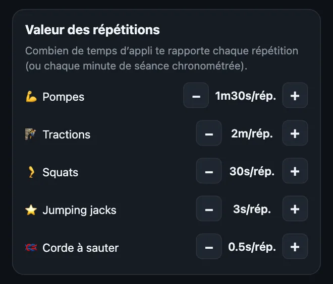

Combien de temps d’écran devrait valoir une pompe ?
Salut tout le monde ! Dans HonorFit, chaque répétition que tu notes t’achète du temps d’appli, et c’est toi qui fixes le prix. C’est la question qu’on me pose le plus une fois l’appli configurée : combien devrait valoir une pompe ? Une minute ? Dix secondes ? Voilà comment je vois les choses.
Les valeurs par défaut
Si tu ne touches à rien, voilà ce que tu obtiens :
| Exercice | Rapporte par défaut |
|---|---|
| 💪 Pompes | 1 minute par répétition |
| 🧗 Tractions | 1m30s par répétition |
| 🔥 Abdos, 🦵 Squats | 30 secondes par répétition |
| Tout exercice que tu ajoutes | 30 secondes par répétition |
| Séances chronométrées (marche, yoga, HIIT) | 30 secondes par minute |
| Séances à la distance | 5 minutes par km, ou 8 par mile |
| 👟 Pas | 3 minutes pour 1 000 pas |
Donc 20 pompes, c’est 20 minutes d’Instagram. Pour beaucoup de gens, c’est à peu près juste pour commencer. Pour d’autres, c’est beaucoup trop généreux ou beaucoup trop radin. Et toi, tu es dans quel camp ?
Une façon de choisir en une ligne
Pense à deux nombres :
- Combien de temps dans tes applis bloquées te semble OK pour une journée normale ? Sois honnête, pas idéaliste.
- Combien de répétitions ferais-tu vraiment pour ça, réparties sur la journée ?
Ensuite, divise : valeur par répétition = temps ÷ répétitions. Tu veux une heure de TikTok pour 60 pompes ? 1 minute par répétition. Tu veux la même heure, mais tu es partant pour 120 squats ? 30 secondes par squat. Et c’est vraiment tout.
Si ta réponse au point 2, c’est « pas beaucoup », ça va aussi. Mets un prix élevé à tes répétitions et utilise une base quotidienne (Réglages, gratuit) pour commencer chaque journée avec un peu de temps déjà en banque.
Quelques réglages à piquer
| Exercice | Chaque rép. rapporte | Ce que rapporte une série |
|---|---|---|
| Pompes (débutant) | 1m30s | 10 pompes = 15 minutes |
| Pompes (tu en fais depuis un moment) | 30 secondes | 40 pompes = 20 minutes |
| Jumping jacks | 3 secondes | 100 jumping jacks = 5 minutes |
| Corde à sauter (par saut) | 0,5 seconde | 600 sauts = 5 minutes |
| Tractions | 2 minutes | 5 tractions = 10 minutes |
| Course (distance) | 6 minutes par km | un 5 km = 30 minutes |
Le principe : plus une répétition est facile et rapide, moins elle devrait valoir. Un jumping jack prend à peu près une seconde, il ne devrait donc pas t’acheter autant qu’une traction.
Des boutons −/+ plus précis dans la 1.18.0
Jusqu’à récemment, la plus petite valeur était de 5 secondes, ce qui rendait les répétitions ultra-rapides (corde à sauter, jumping jacks) difficiles à tarifer, et passer de 3 minutes à 10 minutes prenait une éternité. Un utilisateur m’a écrit à propos des deux, alors dans la 1.18.0, les boutons −/+ suivent une échelle plus maligne :
- Moins de 5 secondes : 4, 3, 2 et 1 seconde, puis 0,5, 0,25 et 0,1 seconde.
- De 5 secondes à 1 minute : par pas de 5 secondes.
- De 1 à 3 minutes : par pas de 15 secondes.
- De 3 à 10 minutes : par pas de 30 secondes.
- Plus de 10 minutes : par pas de 1 minute.
Tu les trouves à deux endroits :
- Réglages → Valeur des répétitions : une ligne −/+ par exercice. Le plus rapide si tu veux juste ajuster un prix.
- Réglages → Exercices → Modifier : l’éditeur complet, où tu peux aussi ajouter, renommer et supprimer des exercices, et passer des répétitions aux minutes ou à la distance. Le tour complet est dans comment personnaliser tes exercices.

Les signes que ton prix n’est pas le bon
- Tu te surprends à noter des répétitions que tu n’as pas faites. Ton temps coûte trop cher. C’est le système de l’honneur qui te dit quelque chose. Monte les valeurs d’un cran à la fois jusqu’à ce que l’envie passe.
- Ton solde ne tombe jamais à zéro. Ton temps est trop bon marché. Baisse les valeurs d’un cran ou deux, ou bloque une appli de plus.
- Tu fais tes répétitions en râlant. C’est sûrement le mauvais exercice, pas le mauvais prix. Remplace-le par quelque chose que tu ne détestes pas. Une marche, ça compte. Les mouvements plus doux aussi.
- Tu accumules des heures et tu claques tout le soir. Active Remise à zéro à minuit (gratuit) pour que le temps non utilisé ne s’entasse pas.
Laisse environ une semaine à chaque nouveau réglage avant de le changer encore. Les deux premiers jours sont bizarres quoi qu’il arrive.
Le mode difficile et le mode malade
Pour les jours qui ne collent pas à tes réglages habituels, il y a un bouton 💀 Difficile que tu peux afficher en haut de l’accueil (Réglages → Mode difficile et malade, gratuit). Touche-le une fois et chaque répétition rapporte moitié moins. Touche-le encore pour le 🤒 mode malade, où chaque répétition rapporte le double, pour les jours où tu n’es pas en forme. Touche-le une dernière fois pour revenir à la normale. Tes vraies valeurs ne changent jamais, donc il n’y a rien à annuler.
Je ne suis pas coach : je fais l’appli, je ne suis pas entraîneur. Si un exercice te fait mal, arrête, et si tu as une blessure ou un problème de santé, demande à quelqu’un qui connaît ton corps ce qui te convient. Ensuite, configure HonorFit en fonction de ça.
HonorFit Blocker est un bloqueur d’applis gratuit sur iPhone et Android. C’est toi qui choisis les exercices et ce qu’ils valent. Système de l’honneur, pas de caméra, rien ne quitte ton téléphone.